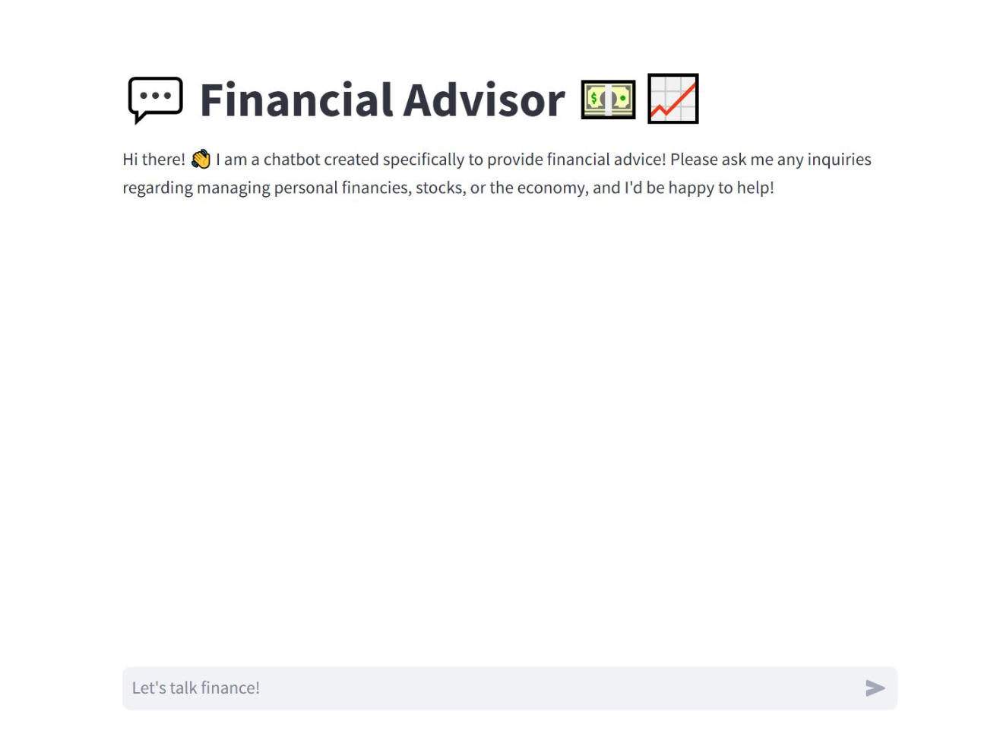
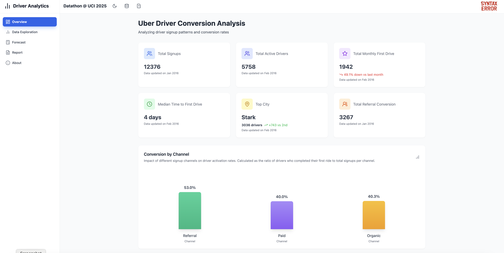
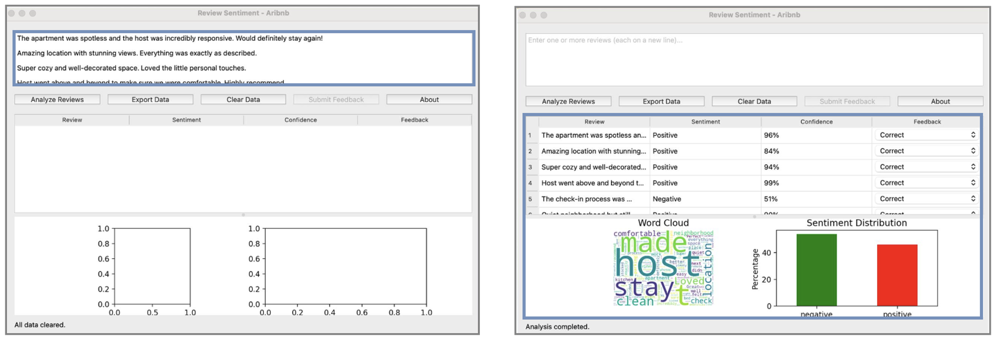
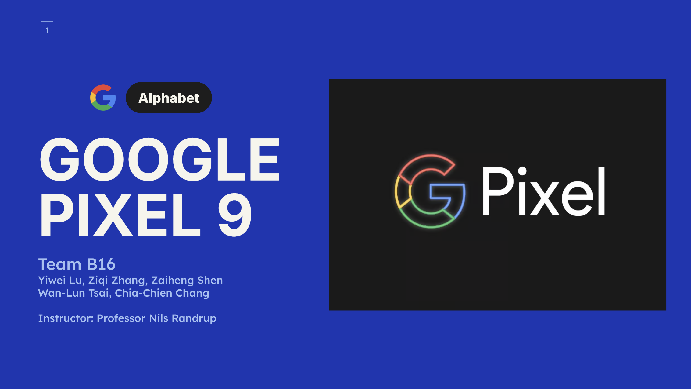
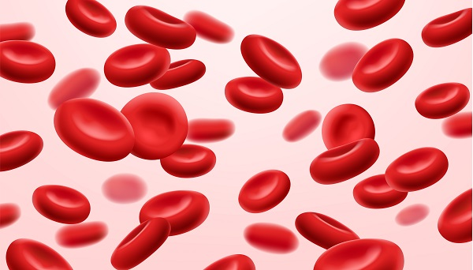
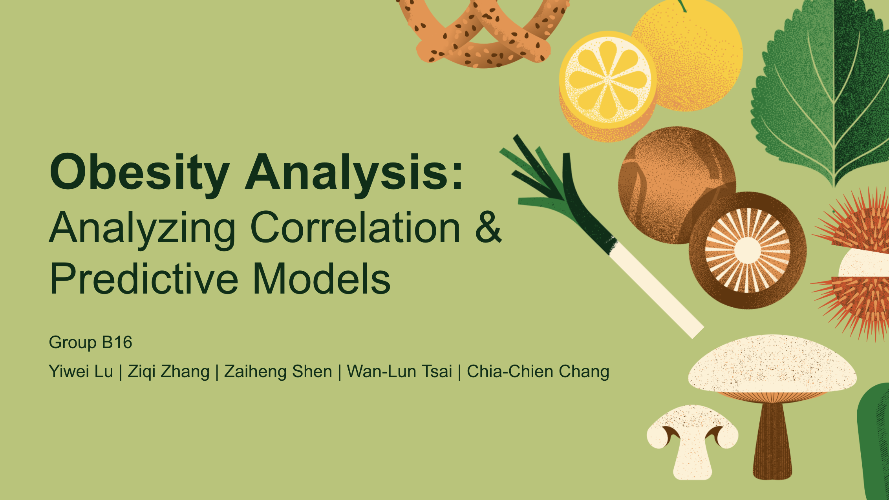
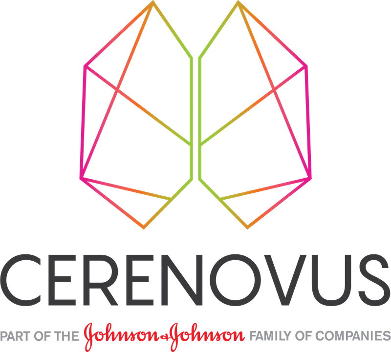

Financial Chatbot
Financial Chatbot for Stock Market Insights
Built an AI chatbot that delivers real-time stock analysis by integrating LLMs with financial data APIs, helping users make informed investment decisions.
Read More

Uber Driver Prediction
Uber Driver Prediction Dashboard
Awarded “Best Use of StrataScratch DC” at Datathon 2025 Competition
Developed by Team SYNTAX ERROR, this interactive dashboard predicts Uber driver performance using machine learning models. It visualizes key metrics such as driver ratings, trip durations, and customer feedback.

Review Sentiment App
Airbnb Sentiment Application & Hosting Strategy
We developed a review sentiment analysis app for Airbnb hosts using XGBoost and NLP. The project segments hosts based on pricing and review behavior, and provides strategic recommendations to increase guest satisfaction and optimize revenue.
Read More

E-Commerce SQL
E-Commerce SQL & Relational Database Design
Designed a relational data model and normalized schema for an online fashion retailer using Looker. We wrote SQL queries for churn prediction, marketing attribution, product return analysis, and inventory optimization.
Read More

Google Pixel Strategy
Repositioning Google Pixel — A Strategic Marketing Analysis
A strategic marketing project focused on diagnosing Google Pixel’s weak market share despite strong AI and camera technology. We analyzed brand positioning, competitive threats, and proposed data-driven solutions to strengthen Pixel 9’s presence in the premium smartphone market.
Read More

Anemia ML Prediction
Predicting Anemia with Machine Learning
This project uses blood test data to train models (Decision Trees, Logistic Regression) for anemia prediction. After feature selection and applying SMOTE, we achieved up to 100% recall, aiding early medical detection.
Read More

Obesity Risk Analysis
Obesity Risk Analysis and Behavioral Clustering
An in-depth analysis of obesity using classification, clustering, and ANOVA. We explored lifestyle and dietary variables to understand obesity risks and public health implications.
Read More

Explore Capstone Project
Johnson & Johnson Cerenovus Capstone Project
Analyzed sales trends and customer churn for J&J’s neurovascular division to uncover key drivers of revenue growth and retention.
Capstone Page

© 2025 Yiwei Lu. All rights reserved.